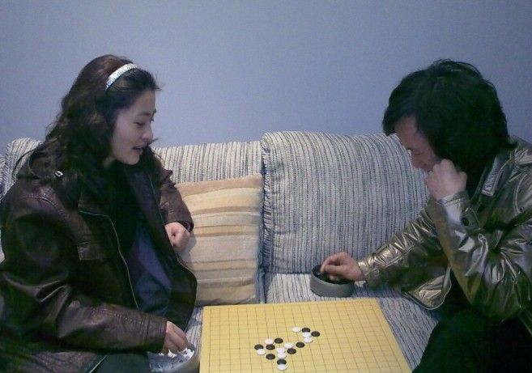
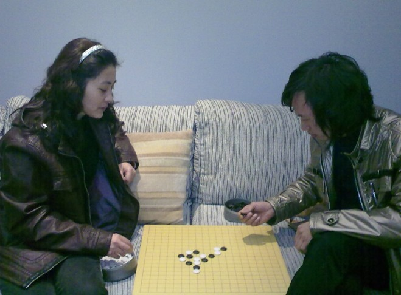
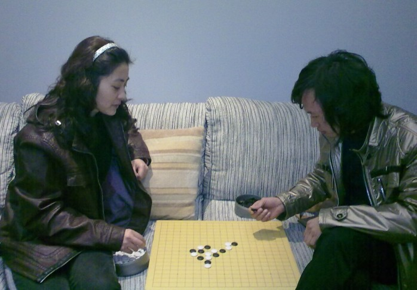
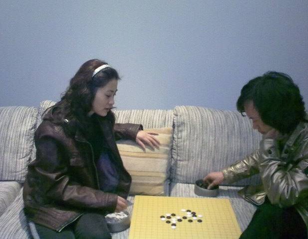

重庆行
#1 重庆行作者：茗弈小刀 发表时间：2010-2-17 21:52:14
今天回到重庆给天涯哥哥打了电话,邀请他和嫂子来我们这边吃饭顺便PK2盘.


［此帖子已被 茗弈小刀 在 2010-2-17 22:02:00 编辑过］
［此帖子已被 有志青年 在 2010-2-18 12:13:07 编辑过］
#2 Re:重庆行作者：哑巴 发表时间：2010-2-17 23:57:22
19路棋盘#3 Re:重庆行作者：刀魂 发表时间：2010-2-18 12:31:54
俺好像看到了，小师姐执白疏星局抓禁了哟！！！
#4 Re:重庆行作者：许相公 发表时间：2010-2-20 19:50:17
 19路盘有感觉，本人一直在用并且打算换成云子
19路盘有感觉，本人一直在用并且打算换成云子#5 Re:重庆行作者：小帮帮 发表时间：2010-2-20 19:57:31
支持姐姐！支持云游四海，以棋会友！#6 Re:Re:重庆行作者：茗弈宽容 发表时间：2010-2-22 17:30:26
［此帖子已被 茗弈宽容 在 2010-2-22 17:39:05 编辑过］
#7 Re:Re:Re:重庆行作者：茗弈宽容 发表时间：2010-2-25 9:56:25
安娜制作